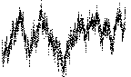
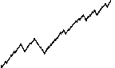

| |dYi| = (dti)H |
First, we introduce the scaling that
characterizes unifractals. |
| (dt1)H - (dt2)H
+ (1 - dt1 - dt2)H = 1 |
Next, we see that unifractal scaling requires that the generator segments satisfy a
condition. |
|  |
Here is one example of a non-Brownian unifractal cartoon. |
|  |
Here is another example of a non-Brownian unifractal cartoon. |
| db ≤ 2 - H |
Finally, here is an observation about the dimensions of
unifractal cartoons. |